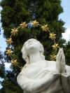
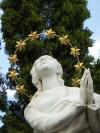
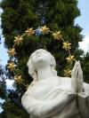
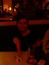
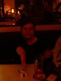

{kind=link}


 
 {kind=link}
{kind=link}

Vuoden 2004 suurimpaan Mukamatkat leisure experience -lomakokemukseen otti osaa ennätysmäinen joukko ihmisiä. Henkilökunnan osallitujana matkalla olivat Tuomas Primary Controller Mettänen, Sami Secondary Liutenant Kerola ja Lasse Oopperavastaava (trainee) Mettänen. Primary controllerin ansioikkaasti kirjoittama matkasuunnitelman näytti tällä kertaa tältä.
From tuomas@nospam Thu Jul 1 18:45:10 2004
Date: Wed, 26 May 2004 10:55:05 +0300 (EEST)
From: Tuomas Mettanen <tuomas@nospam>
To: kerolasa@iki.fi, lasse.mettanen@nospam
Cc: tuomas@nospam
Subject: Mukamatkojen oopperamatka ulkomaille
kesäkuussa.
Hyvää päivää,
Tahtoisin tässä kertoa hieman ulkomaille suuntautuvasta oopperamatkastamme jolle olette ystävällisesti osallistumassa. Muistattehan varautua pukeutumiskoodeihin, puku jossa kravatti pakollinen.
Sunnuntai-aamu 20. kesäkuuta
Lähtö tapahtuu Helsinki/Vantaan ulkomaan terminaalista terveelliseen aamuaikaan eli kello 6:50. Kokoonnumme Primary Controller Tuomas Mettäsen, Secondary Liutenant Sami Kerolan sekä Ooppera-asiantuntija Lasse Mettäsen johtamana joukoksi. Lennämme viihtyisällä SAS-yhtiön lentokoneella ensin Kööpenhaminaan jossa vietämme vajaa kaksi tuntia tutustumalla paikallisen lentoaseman nähtävyyksiin. Prahaan saavumme kello 10:40.
Tiistai 22. kesäkuuta
Vaatteet vaihtuvat rennompiin ja toiseen silmään vaihtuu eri väri. Lähdemme siis kuuntelemaan David Bowien nykyistä keikkakuntoa Prahassa. Mukana menossa Prahan yhdyshenkilömme Jana. Ennen konserttia ja konsertin jälkeen Mukamatkojen olutfestivaali.
Perjantai/Lauantai 25/26. kesäkuuta
Keräämme Prahasta asiakkaan nimeltä Filip Tomasek ja jäämme kadulle odottamaan. Kadulle toimitetaan hyväkuntoinen vuokra-auto jolla matkustamme Beethovenin kotikaupunkiin Bonniin. Bonn sijaitsee Saksassa ja on kuuluisa.
Kello 19:00, saavumme Bonnin oopperataloon nauttimaan Philip Glassin teosta nimeltänsä Satyagraha. Yövymme todennäköisesti lauantain/sunnuntain välisen yön hotellissa. Sunnuntaina palaamme toivottavasti samalla vuokra-autolla takaisin Tsekkiin. Auto on käytössämme koko viikonlopun joten tänä aikana tutustumme maan ominaisuuksiin paikallistasolla.
Tiistai 29. kesäkuuta
Aamupalan jälkeen vapaamuotoista liikuntaa ja pukujen silittelyä. Iltapäivällä Primary Controller Tuomas Mettänen pitää alustuksen illan näytöksestä. Illalla kello 19:00 saavumme Narodni Divadlo rakennelmaan, tuttavallisemmin Kansallisoopperaan ja valmistaudumme tarkastelemaan kriittisin korvin Philip Glassin sävelmää Belle et Bete, (Nätti ja hirviä). Tämän jälkeen voimakastahtoisimmat jatkavat vielä klubiravintola Roxy:n suuntaan jossa esiintyy viihteellinen ranskalaisyhtye Air.
Keskiviikko 30. kesäkuuta
Pikaisen aamupalan ja verryttelyn jälkeen palaamme Prahan lentokentälle josta lähdemme lennolla kello 10:15, piipahdamme verestämässä muistoja Kööpenhaminassa, lähettelemme kortteja ja saavumme Helsinkiin kello 16:00.
Primary Controller toivottaa antoisaa odotusta!
Alla vielä sama lyhyessä muodossa:
SU 20.6 06:50 Lähtö Helsinki/Vantaa.
TI 22.6 19:00 David Bowie, Praha.
PE 25.6 06:50 Lähtö Prahasta Bonniin.
LA 26.6 19:30 Philip Glass: Satyagraha, Bonn.
SU 27.6 06:50 Lähtö Bonnista Prahaan.
TI 29.6 19:00 Philip Glass: Belle et Bete.
TI 29.6 23:00 Air, Praha.
KE 30.6 10:15 Paluu Helsinkiin.
.tuomas
Matkapäivä nolla
Kokoontuminen Primary Controllerin asuin residentsiin. Aurinkoisen päivän iltana pohdimme, että rahaa voi säästää siten, ettei kadota arvokkaita esineitä tai asioita. Säästyneet rahat voi käyttää parhaaksi katsomalla tavalla ja iloita matkasta, joka on paljon halvempi kuin se olisi voinut olla. Erityisen iloinen voi olla silloin, jos löytää hukkaamansa tavaran. Tällöin matkustaja on suorastaan velvollinen käyttämään hukkaamansa, jonka jälkeen uudelleen löytämänsä, tavaran arvon verran rahaa johonkin toiseen tarkoitukseen.
Matkapäivä I
Mukamatkojen hallintoneuvostolle huomautus: "Nupit
Kaakkoon - Lounasmatka Intiaan" -projektia täytyy
alkaa suunnittelemaan. Idea syntyi palmujen katveessa
Kööpenhaminassa.
Matkapäivä II
Secondary Liutenant haluaisi muistuttaa kanssamatkustajiaan, parista asiasta. Aluksikin aamu ei suikaan valkene vaan pimeys poistuu. Toisekseen maailma ei missään tapauksessa ole pyöreä vaan vino. Maailman vinouden huomaa helpoiten katsomalla SAS:n europasta pohjoisameriikkaan suuntautuvien lentojen karttaa.
Oopperavastaava sen sijaan havaitsi, että Ravel
keksi Boleron rytmin Prahalaisen junan inspiroimana.
Tähän Bolero-junaan voi tutustua Prahassa
Nusle:n kaupunginosassa. Bolero-junat menevät aina
kohti kaupunkia. Mukamatkojen henkilökunta ei
suosittele kaupungista lähtevien junien
kuuntelemista, niiden rytmiikkaa on huomattavan
tylsää kuunnella. Päivällä
tutustuimme Prahaan. Tähän mennessä ei
muuten mitään ole mennyt hukkaan, joten
kävimme sen kunniaksi illallisen Fratello
ravintolassa.

Myöhemmin illala oleilimme ja otimme taidekuvan
Janan asunnossa.
Matkapäivä III
Primary Controller nukkui päiväistä noin 65-75%. Jalkapallossa Tanskan ja Ruotsin tulisi käyttää niin kutsuttua picnik -taktiikkaa. Taktiikkaan kuuluu se, että pelipaidat otetaan pois päältä ja laitetaan nurmikolle suurehkoksi kangasalueeksi. Aluetta voi sitten käyttää smörgåsien syömiseen. Tämä picnik -taktiikka myös johtaisi siihen, että saksa tipahtaa kisoista todennäköisemmin. Tänään oopperavastaava muutti nukkuma residentsinsä asumuksemme eteläsiipeen. Kävimme illallisella Fratellossa, josta saimme matkamuistoksi ympäripyöreän runon:
125,- II 250
128,- 128
31,- III 93
108
-----
579,
18,-IIIIII
Matkapäivä IV
Aamiainen Fratellossa. Vladimir perui tapaamisen Mukamatkojen henkilökunnan kanssa. David Bowie keskeytti keikkansa sanoihin "I'm in therible pain, I have nerv pinch. Sorry, I can't continue". Keikka oli kuitenkin kelvollinen. Mukamatkojen henkilökunnalle itselleen päivä oli pitkä, mutta raskas. Seconrary Liutenantille maistui olut. Jätimme jopa päiväunet välistä. Tällä välin jalkapallossa Saksa tippui.
Matkapäivä V
Aamiainen Fratellossa. Paljon lepoa. Tapasimme
Vladimirin ja saimme kielikurssin. Dêkuji
(kiitos), dobrou noc (hyvää yötä)
ja dobrë räno (hyvää huomenta).
Illalla seurasimme futismatsia mukamatkojen asiakaan
Filipin kanssa. Englanti tippui, Prahassa olevat britit
alkoivat käyttäytymään hyvin
huonosti putoamisensa johdosta. Ei ihme ettei
heistä pidetä missään.

Matkapäivä VI
Kello 00:04 Secondary Liutenant pitää
museokierroksen matkan muille osallistujille.

Hiemaisen levon jälkeen jouduimme toteamaan,
että autovuokrausyritys Hertz ei oikein hallitse
toimiaan. Primary Controller odottelee auton tuojaa
kohtauspaikalla yli tunnin, eikä mitään
tapahdu jolloin Primary Controller liittyy muun
henkilökunnan seuraan Fratelloon ja syö
pikaisen pitsan. Tällä välin Hertz
sählää omiaan jolloin Vladimir, jonka
kunniakkaalla avustuksella vuokra-auto alunperin
hankittiin, neuvoo kuinka asiakkaita kohdellaan. Hyvin
pian saamme Skoda Octavian, jossa on 1.6l kone ja
ilmastointi.

Koeajo suoritetaan Kutna Horaan, missä oli
tarkoitus nähdä Mukamatkojen
henkilökunnalle matkakohdeeksi suositeltua
luukirkkoa. Ensimmäiseen kirkkoon saavuttuamme
näemme erittäin komean katedraalin, muttemme
luun luuta. Seuraava Kutna Horasta
löytämämme kirkko on remontissa.
Sitkeän etsiskelyn jälkeen luukirkko
löytyy, ja se todellakin on erittäin
vaikuttava. Kirkko kuuluu tästä lähtien
Mukamatkojen virallisten kohteiden joukkoon.
Palasimme Prahaan ja haimme matkustaja Filipin bensa-asemalta ja jatkamme matkaa kohti Saksaa. Yöpyminen tapahtui Hotel Primdassa. Ranska tippui.
Matkapäivä VII
Primdan pihalta löysimme erikoisia esineitä.
Primary Controller yritti päästä
yhdellä esineistä teleportata Bonniin, yritys
epäonnistui.

Fun on autobahn. Primary Controller tunsi Bonnin kuin
vasta-avatut taskunsa. Satyagraha oli ooppera
siitä paremmasta päästä. Bonn music
hall eli jonkin asteen oopperatalo on ruma.
Suosittelemme myös välttämään
permannon rivejä 21+, sillä silloin on parven
alla ja kuuluvuus muuttuu hyvin huonoksi. Kaupunkina
Bonn on ankea, kuollut ja itäsaksahtava
läjä. Emme suosittele Bonnia
kenellekään. Ruotsi tippui.

Matkapäivä VIII
Paluumatkalla kävimme tutustumassa Saksalaiseen
pikkutiehen. Havaitsimme myös, että
Saksalaisilla on tapana numeroida puut.


Takaisin autobahnille. Törmäsimme stoj:hin
eli ruuhkaan. Matkustusnopeus oli tuolloin 10
kilometriä kahdessa tunnissa. Autobahnan reunalla
näimme näytteille asetetun Concorden,
mikä pystyy kuvasta havitsemaan pakettiauton
takaa. Tutuistuimme myös Hockenheim
autourheilurataan. Prahaan päästyämme
mittarissa luki 1720 kilometriä. Tanska
tippui.


Matkapäivä IX
Mukamatkojen henkilökunta tutki kielellistä kuriositeettiä ja tuli siihen tulokseen ettei "Kokko, kokoo kokoon koko kokko. Koko kokkoko? Koko kokko." ole niin kovin merkillinen. Mukamatkojen oma kielellinen kuriositeetti on "Erkki Tohva, rakenna nuotio. Nuotio? Nuotio". Oopperavastaava joi elämänsä ensimmäisen kerran tequilaa.
Matkapäivä X
Secondary Liutenant keksi Teemulle häälahjan
ja tuli siinä sivussa herättäneeksi
kaikki. Päivällä tutustumis käynti
Herna 666 peliautomaattibaariin. Päätimme
myös tallentaa Prahalle tyypilliset ovet. Belle et
Bete oli visuaalisesti upea ooppera. Viime vuonna
musiikki teki Primary Controlleriin ja Secondary
Liutenanttiin suuremman vaikutuksen, muttei se ollut
täysin huonoa tälläkään
kerralla. Tänä vuonna libretto oli myös
englanniksi ja se edes auttoi oopperan
ymmärtämistä huomattavasti.


Oopperan jälkeen söimme Janan, Davidin,
Filipin, Barbaran ja Erikan kanssa. Filipille
jäimme Bonnin matkasta oopperalipun verran velkaa
ja se tullaan maksamaan hänelle kesällä
2006 Savonlinnassa.

 
 


Matkapäivä XI
David vei meidät kentälle, ja tästä hänelle kunnia maininta. Saapuminen Helsinkiin, jossa lämpötila +14 astetta ja sateista. Mukamatkojen hallintoneuvosto päätti ottaa Oopperavastaavan tittelistä trainee sanan pois. Näin ollen Lasse Mettänen on Mukamatkat leisuresuit traveling circuitin pysyväisjäsen ja virkailija.
{kind=link}
{kind=link}
{kind=link}
{kind=link}
{kind=link}
{kind=link}
{kind=link}
{kind=link}
{kind=link}
{kind=link}